常见问题
- 1网络连接失败、网络类型(-1)、(0-6)说明
-
网络连接失败
①可能由于您系统自带防火墙或其他防护软件限制了快播的使用，所以提示网络连接失败。
请确认把快播安装文件夹下qvodplayer.exe与qvodterminal.exe加入到允许或信任的列表中，然后开启路由上的UPNP功能再试（已开启状态下请确认系统自带防火墙未阻止UPNP框架）。
②如果按上述方法仍不能解决，建议问问相同网络环境的其它用户或朋友能否正常使用快播，如果都不能正常使用，可能是网络环境限制（可下载：用户环境检查工具 测试，提示请检查您的80端口是否受限！...与服务器通信失败，如下图），请与网络提供商或运营商联系咨询看看。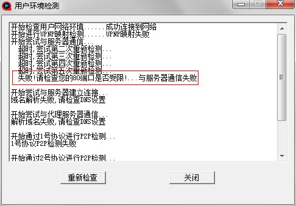
网络类型(-1)
快播联网程序qvodterminal.exe 没有启动或无法访问网络。
可能是电脑装了防火墙或杀毒软件等，在运行QVOD播放器时提示用户是否允许qvodterminal.exe访问网络，用户选择了否。
解决办法：
①把QvodTerminal.exe和QvodPlayer.exe选择允许并将其添加到信任域（退出或关闭，防火墙等仍是会自动拦截，并不起作用的）
②尝试先卸载相关防火墙、安全软件，重新安装快播安装包再试试。
③在网吧等公共场所，可能是管理员在系统限制快播运行，可咨询管理员看看。网络类型(0)是正常情况。
网络类型(1～3)
属于内网环境，虽然也可以使用，但是效果稍差，请在路由器内，开启UPNP，可参考：http://bbs.kuaibo.com/viewthread.php?tid=24529&highlight=UPNP网络类型(4～6)
这个情况是所在网络环境有关，快播无法正常连接互联网。
①首先查看本地防火墙（还有系统自带的防火墙），是否拦截了快播QvodTerminal.exe 进程的运行和网络通信，建议都完全关闭，然后重新做检测。
②如果最近更换了路由器出现，请尝试不接路由器直接联网测试，如果正常，说明是路由器本身设置引起的，可参看路由器说明书进行设置。
③如果使用的网络是小区宽带网络，公司网络，校园网等通常会有这个情况发生，（可下载：用户环境检查工具 测试确认），可联系网络提供商或网络管理员咨询具体情况。
- 2看完电影关闭了快播，为什么还有数据在下载上传呢？
-
出现这种情况是因为没有完全退出快播，快播的网络模块程序（qvodterminal）仍在后台运行引起的。
如果您不想要快播继续传输数据，可在任务栏右下角右键点击快播图标，选择完全退出就可以啦。
如图：
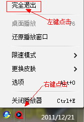
- 3安装快播后有时可能会有网速变慢的情况，该如何解决？
-
快播有提供速度限制模式喔，大大方便用户可根据需要自主调整带宽占用情况。实现方式：在系统托盘右键点击快播图标-限速模式。如果您在用快播看电影时，为保证流畅观看，建议将速度限制模式改为自动模式，不看电影的时候设置禁止传输或完全退出即可。
如图：
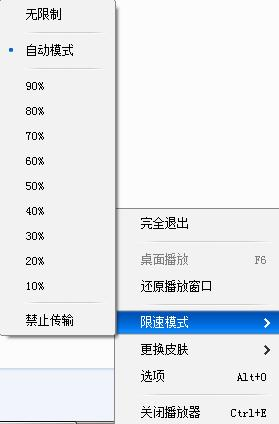
- 4在线点播一直只显示缓冲却不能播放？
-
这种情况一般是由以下几种情况引起的：
情况一：由防火墙引起的。
解决办法很简单：请在您开启的防火墙或是杀毒软件里设置允许QvodTerminal.exe和QvodPlayer.exe访问网络。常见防火墙和杀毒软件默认不会拦截，如果不小心设置了可参考以下方法修改：
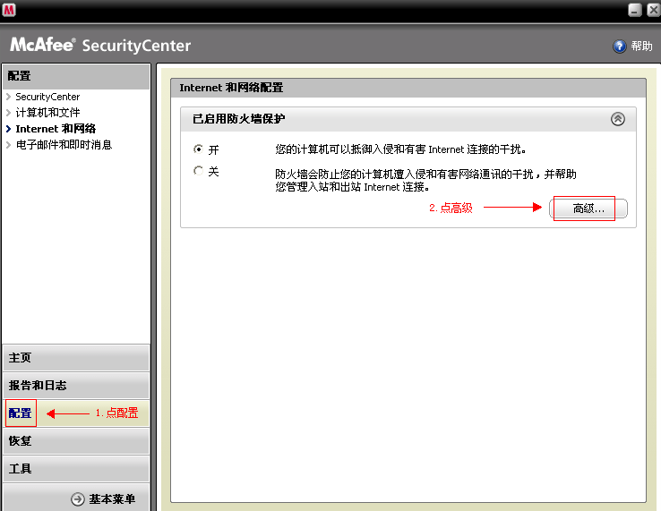
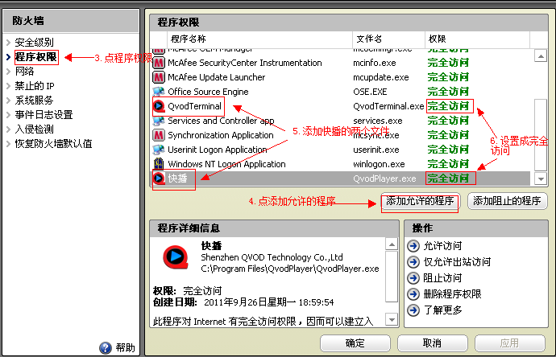
情况二：由网络带宽不足引起的。
若出现能够接收到数据，连接到的源也比较多，但接收数据为几K/S，可能是由网络带宽不足所致，而网络太慢则可以尝试关掉其它的网络进程后，开启文件-选项-网络-HTTP协议后再试。
情况三：由影片资源失效引起的。
快播（QvodPlayer）开始运行后都会需要一段时间的缓冲，但如果长时间缓冲后，仍显示接收数据为零，有可能是该片链接失效或者下载的种子文件被删除或损坏，请重新寻找影片资源再下载。多换几个不同的网站试一下（如:http://v.ifeng.com/kuaibo/）。
情况四：由影片资源太少引起的。
若出现能够接收到数据，但连接数较少而接收数据为几K/S，则可能是资源太少导致，建议重新寻找源多的文件下载或是更换速度更好的网站在线点播。
情况五：qvodterminal没有启动引起的。
在任务管理查看qvodterminal是否随快播启动而启动，如果没有，请尝试重新安装快播，并在启动快播时留意是否有提示，选择允许快播两个程序联网。 - 5视频框架、更多调节设置后，更换视频还是要重新设置
-
由于每一个视频默认比例有所不同，考虑到视频沿用相同设置，可能会直接影响到下个视频的播放比例，所以目前这些功能仅针对当前播放有效。
- 6已经安装了快播播放器，在网页点播仍提示未安装？
-
出现这类问题可能有以下几种原因：
1.由于您使用的浏览器属于多核心浏览器，如：搜狗、火狐等，请使用兼容模式点播（点击高速切换），或者使用系统自带IE浏览器进行点播。
如图：
2.由于您的浏览器管理加载项中禁用了快播插件引起。解决办法：打开IE浏览器，在菜单栏工具项→找到加载项管理器→“启用”或“禁用”加载项，并在弹出的对话框中启用所有以ShenZhen QVOD 开头的加载项，
如图：
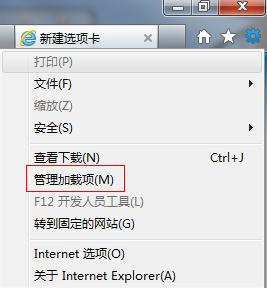
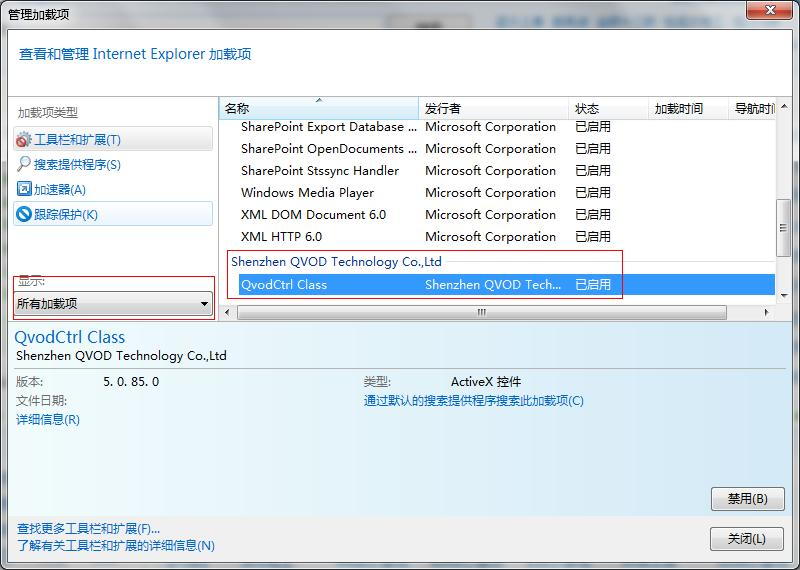
3.由于浏览器加载项没有快播插件，请重新安装最新版快播。快播5下载地址：
http://dl.kuaibo.com/QvodSetupPlus5.exe
4.64位win7、vista系统请用非64位IE或其他32位浏览器点播（如360浏览器、世界之窗浏览器）
如图：
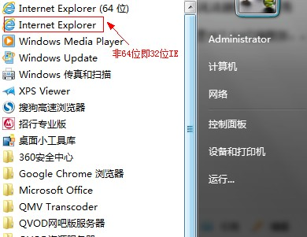
- 7网页点播或本地点播出现Runtime Error？
-
出现这样的情况有可能是系统运行库损坏，建议您先进行病毒木马查杀，然后升级当前系统硬件的驱动程序，重新安装运行库（http://dl.pconline.com.cn/download/84617.html）完成上述步骤后，再进行重新点播。
- 8在点播过程出现：打开失败，（错误码：0x700...等），或是提示缺少相关解码器及无声音现象？
-
出现这种情况可能是解码器出现错误。请尝试到快播官网（www.kuaibo.com）下载最新版快播安装后再试。
1、如果您在使用快播点播视频过程中遇到提示错误代码40XX或者有声音没图像的情况，可以通过下载附件中的pncrt.dll控件，找到系统文件目录（C:\WINDOWS\system32）下替换原来的pncrt.dll控件即可解决。pncrt.rar
2、有图像没声音的解决方法：
点击任务栏上：开始——运行——dxdiag，结果可能会提示出dsound.dll、ksuser.dll、kernel32.dll或quartz.dll等控件丢失。
这些控件都在C:\WINDOWS\system32路径下，选择以下附件中相对应的文件名下载后，将所原文件目录（C:\WINDOWS\system32）下替换掉即可，不需要注册。
 dsound.rar ksuser.rar kernel32.rar quartz.rar d3d8.rar
dsound.rar ksuser.rar kernel32.rar quartz.rar d3d8.rar 另外：如果dxdiag提示出错的文件太多，建议用户重新安装DirectX9.0C以上的版本。
DirectX9.0C
如通过上述方法未能解决您的问题，请联系在线客服排查。
- 9在网吧无法使用快播
-
有个别网吧会禁止下载，如果您在网吧不能使用快播，请第一时间与所在网吧管理员咨询是否网吧限制了快播，
如果确认限制，请寻找网管给予解封 或者如果能够下载但无法安装，可尝试将快播安装文件名修改为其它后再运行试试喔；
同时，可以给网管建议使用快播网吧版服务器（下载地址： http://www.qvod.com/product/wangba.htm），即可满足用户需求，又可解除占用带宽的问题呢。
- 10声音与画面（音视频）不同步
-
当您在使用快播时出现声音与画面不同步的情况时，请尝试在播放时在界面左上角关闭画质增强功能或者在快播播放器设置-选项-播放-播放模式调到性能模式后看看。
如图：
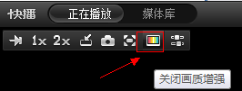
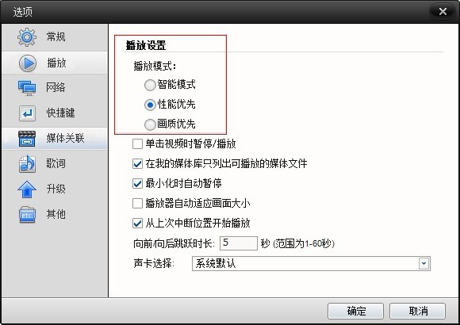
如果上述调整仍无效，请排查是否个别文件本身问题，可更换其它文件播放对比是否正常，或者把硬件配置发给客服人员为您分析。
- 11快播5如何观看电视直播？
-
快播5的直播功能仍处于测试阶段，后续将会带给您更多精彩。
如果想抢先体验，（可直接点击：湖南卫视 央视新闻）
请关注此贴：http://www.kuaibo.com/bbs/thread-35847-1-1.html
- 12能不能只用快播在线观看电影而不用下载到本机上，下载到本机是否会伤硬盘？
-
快播是一款万能播放器，在线点播是否保存电影在硬盘上是由发布者在服务器上设定的（目前大多数快播网站都没有设置防下载功能）。
对于硬盘方面，快播对读写数据方面已经做过优化的,先缓冲比较多的数据再进行写入。并且有针对的对文件进行缩放处理的。比传统的BT软件硬盘读写功能是会好很多的。
至于会不会伤硬盘，其实硬盘的使用，不存在伤与不伤的说法，硬盘的使用都是在正常的设计使用寿命范围内，并不会因为你通电开机后不读写硬盘，而使硬盘寿命增加。 所以，快播使用了缓冲机制，不会频繁读写硬盘，请放心使用^.^
- 13为什么下载完成后文件后缀名还是！mv？
-
!mv是快播下载的临时文件，在没有下载完成前是.!mv结尾，下载完成后，会自动改名，去掉.!mv，如果改名不成功，说明系统中有其它软件在使用该文件。请关闭该软件后再试，或者重启电脑后再进行改名。
- 14用快播在线点播，下载速度很慢怎么解决？
-
首先请您确认选择了设置-选项-网络中的“加入缓冲优化计划”，并以自动模式点播，该模式下会根据您所在的网络环境自动调整接收速度的喔。
另外，使用快播时请注意关闭后台有下载或上传功能的软件。
- 15用快播点播时出现网络异常（断网）
-
首先建议将快播的速度限制模式改为自动模式或90%以下试试。
如果仍有断网的情况，建议您可从以下方法排查原因：
- 16快播下载电影会自动暂停
-
自动暂停的原因一般是当前的下载任务中，有一个或者多个遇到磁盘读写错误，为了防止程序崩溃才暂停的。
目前已知的有两种情况会导致这个问题:
1、使用移动硬盘下载，然后又拔除，如果是此类情况，请将保存在移动硬盘的任务删除，重新下载到硬盘即可；
2、另外，磁盘可能存在坏簇或无写入权限，建议将接收文件保存路径指定到其他分区，然后删除掉下载的任务再重新下载。
- 17在网页点播提示插件损坏
-
此问题一般是浏览器没有加载到快播插件，或快播网络模块程序qvodterminal没能正常启动引起的。
您可根据以下方法排查：
1、通过浏览器设置中的管理加载项，检查浏览器中快播组件是否被禁用，若没找到，可尝试重新安装快播并点播，在点播过程有安全软件或网页提示插件允许时，请点允许。
如图：
2、浏览器有快播加载项，但是在任务管理器没有找到qvodterminal，这种情况请重新安装快播，如果还是没有启动，可能是防护软件或自带防火墙限制是否限制或拦截快播，建议将快播安装文件夹内qvodplayer.exe与qvodterminal.exe程序加入到允许或例外列表中（详情设置可参考：http://bbs.kuaibo.com/thread-1705-1-1.html第2点）
- 18运行快播提示应用程序错误
-
出现此类问题的原因比较多，大多数情况是由于磁盘存在坏道引起的，
建议您可以通过以下方法排查：
1、请尝试在快播安装目录所在磁盘分区右键-属性-工具-查错修复下磁盘或者将当前的快播完整卸载，然后重启电脑后再安装快播，请在安装时改变安装路径喔。
2、如果您使用是不是最新版快播，请到快播官网www.kuaibo.com下载最新版安装后再试试。
- 19如何在看连续剧的时候点以下自动播放下一集？
-
自动播放下一集功能快播在很早前的版本就有，该功能是需要网站支持的，当前大部分快播电影站都已支持自动缓冲下集功能，您可以在www.yayamov.com 电影分类中查找自己喜欢的电影网站体验在线点播，在此收录的免费电影站都是用户体验良好的网站喔轻松实现观看连续剧集。
另外，将想要观看的文件点播创建任务后，在快播主菜单--设置--选项--网络中选择启用网络任务连下连播功能也可自动接收。
如图：
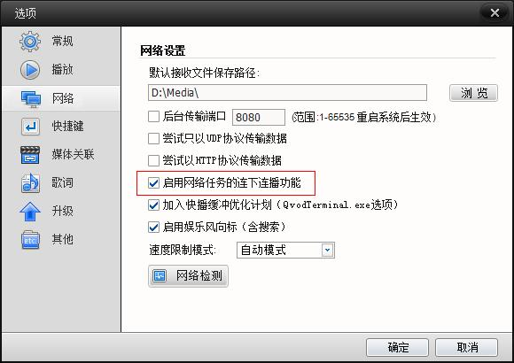
- 20 已经安装了官网下载的快播，但是在某些网站点播还提示下载快播？
-
如果只是某些网站不能播放，一般情况下是第三方网站刻意做此提示，意在引导用户安装非官方版本的播放器，此类非官方版本软件可能带有不安全因素，为将您的上网安全体验风险减至最低，建议不要安装。请选择其它体验良好的网站在线点播。（可在www.yayamov.com 查找)
- 21新版打开微视频地址提示任务创建失败或缺少相关解码器
-
快播5暂时未增加打开微视频地址功能，如果在快播菜单-文件-打开url里打开微视频地址，就有可能出现该提示。
请不用担忧喔，该功能深受广大用户喜爱，在后续版本是会加入的。 如果您希望马上体验到该功能，可通过快播官网www.kuaibo.com下载安装3.5不升级版。
- 22网络任务重启丢失
-
这种情况一般是由异常原因（如：电脑异外重启、突然断电或者直接结束程序等）导致网络任务丢失，目前无法恢复，如果您出现该情况，请重新资源点播即可。
另外如果您使用非快播最新版（以官网发布为准），建议到快播官网www.kuaibo.com下载安装。
- 23快播一直下载很快，最近变慢了，如何解决？
-
描述：快播一直下载很快，最近下了10几部电影后突然变慢了，网络检测正常，也没改变过设置。
解决方法：该情况可能是接收文件保存路径中文件夹文件过多所致，请将无需保存的文件进行清理或移动到别的其它文件夹后再重新点播即可。
- 24用快播接收下载完的视频怎么转到手机上观看？
-
首先需要确定您的手机支持所下载的视频文件，可通过快播网络任务右键打开文件位置，找到已下载完成的文件直接拷贝到手机或移动盘（MP5等）即可播放。如果移动盘或手机等不支持该视频格式，请使用视频转换软件将下载的视频转换成相关的格式再拷贝。
小贴示：
①手机支持视频格式目前种类较复杂，相同格式可能因为尺寸不同而造成转换视频不支持。建议先确认一下手机支持格式然后进行转换后再试。
快播安卓版下载链接：http://dl.kuaibo.com/android/QvodPlayer.apk
快播苹果（IOS）版下载链接：http://itunes.apple.com/cn/app//id475596116
- 25网络任务丢失后，DATA文件夹下的种子文件是否可以直接打开继续下载？
-
Data文件夹下的.torrent文件是点播电影的下载进度信息文件，不被其它BT软件识别。此类文件不会上传，也不会影响电脑正常使用。
如果出现网络任务丢失的情况，是无法通过Data文件夹下的文件继续下载，请重新点播。
Copyright 2006-2011 Shenzhen www.tbmov.com All Rights Reserved.